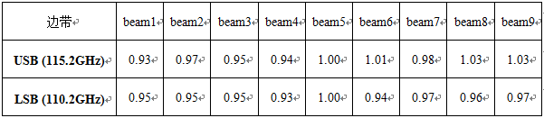

( Status Report on the 13.7 m MM-Wave Telescope for
the 2016-2017 Observing Season )
徐烨、左营喜、张旭国、李振强、李阳、庞兴海、李积斌、张海龙、金凤娟
巨秉刚、孙继先、逯登荣、王敏、颜昆、张永兴、颜萍
中国科学院紫金山天文台青海射电天文观测站
德令哈毫米波观测基地
2016年10月
(一) 望远镜系统概况及夏季维护与更新改造情况
在2016年夏季（7 - 9月）维护更新季节，对望远镜机械传动系统进行了常规检修和维护，用照相测量方法调整了天线面板，对超导成像频谱仪系统进行了检修和维护。至9月6日基地陆续完成了夏季的各项维护（检修、更新）计划项目。
从8月6日开始，基地对望远镜进行了为期1个月的“综合性能天文测试”工作，包括望远镜指向测试、副反射面调焦、接收机9个beam方向图测试、9个beam间隔矩阵和效率矩阵测试、天体谱线标准源的强度与视向速度测试等。
以下简要报告维护、更新、测试等方面的主要工作和结果：
（1）用照相测量的方法调整天线面板[1]。从2009年以来，每年采用工业数字照相摄影测量系统，以EL=52°为基准位置，对天线面板进行测量，并根据测量结果，进行面板预置调整，今年调整后的天线面板精度RMS为76μm。
（2）天线主、副反射面机械系统检修[2]。继续通过合同方式，由南京中科天仪中心主持对天线的机械部分做了详细检修，对所有轴承、齿轮进行了清洗、加油。
（3）清洗天线主面面板[2]。望远镜经过一个观测季节的运行，抛物面表面覆盖了灰尘，严重影响望远镜的反射性能，为保证望远镜的反射性能和口面效率，延长主面板的使用寿命，在夏季维护中，对望远镜面板进行彻底地清洁保养。
（4）接收机系统夏季维护[2]。对接收机系统所有设备进行了检修，部分老化设备进行了更换和更新。其中：①更换制冷机，更换压缩机吸附器，仪器除尘；②更换BEAM6混频器，调整BEAM5与BEAM7的混频器、混合电桥与HEMT放大器，更换个别噪声大的HEMT放大器；③对BEAM4和BEAM8混频器进行了增加磁场抑制台阶分裂；④更换杜瓦内部分有问题或疑似有问题的电缆；⑤对部分老化的设备，比如直流电源进行更新。⑥进行TRX/IRR测试以及波束测量等。
(二) 望远镜性能的简要说明
1 天线及表面精度
德令哈基地毫米波望远镜口径为13.7 m (45英尺) ，使用地平式机架。望远镜的光学系统是经典“卡塞格林”系统，接收机工作在卡焦上。2016年经过面板调整后的主反射面的表面精度rms为76μm[1] 。
2 望远镜跟踪
通过测试表明，方位跟踪误差的rms为0.91″，俯仰跟踪误差的rms为1.46″，对绝大部分天区，天线的跟踪误差在1-3"左右[5]，完全符合观测要求（根据望远镜的波束大小，观测时望远镜的跟踪误差允许范围也被限制在5"以内，以保证足够地跟踪精度）。图2.2.1为天线在AZ和EL两个方向的跟踪误差测试结果：
图2.2.1 方位和俯仰的跟踪误差统计分布图。方位99.07%在3角秒内，
俯仰93.68%在3角秒内。数据取自参考资料[3]。
3 望远镜指向
采用“连续谱总功率接收工作模式”对行星（木星等）进行连续谱“五点指向观测”，同时对行星状星云、SiO（2-1）脉泽源进行点源的谱线“五点指向观测”。通过3天时间，将观测取得地1361组数据用指向修正模型进行拟合。从2006－2007观测季节开始，使用10个参数的指向模型，南北天分开拟合，新的指向模型在全天区域的适用性更好。图2.3.1是一个指向测试实例中指向源的空间覆盖。图2.3.2是指向修正模型计算出的南天区和北天区的残差分布。结果显示，该轮测试得到地望远镜南天指向误差（rms）为3.8″[4]，北天的指向误差（rms）为4.2″[5]。在综合测试过程中，“指向观测à模型拟合à修改验证”的过程要进行多轮。重复测试的结果显示望远镜最终全天指向精度小于5″。
图2.3.1 五点观测时南天VENUS、JUPITER、SATURN、ORIA、R-Leo、X-Cyg、IRC+10216 [4]和
北天NGC7027、R-Cas、T-Cep [5]有效数据点在天空中的分布。
图2.3.2 模型拟合后得到地方位残差和俯仰残差的图示。左边是南天的拟合结果，
椭圆的长半轴为2.8″，短半轴为2.6″，方向角为-3.7°，数据取自参考资料[4]。
右边是北天的拟合结果，椭圆的长半轴为3.2″，短半轴为2.7″，方向角为24.8°，
数据取自参考资料[5]。
在望远镜运行阶段，指向状况还可以通过观测CO谱线点源（如IRC+10216等晚期恒星）或者具有明显局部空间分布特征的部分CO面源（如S140等）来不定期地加以验证。
作为常规测试项目，在观测季节内，每个月还要进行一轮指向测试与验证。
4 望远镜的温标和效率参数（半功率波束宽度、方向图、月面效率、口面效率、波束效率、间隔矩阵、效率矩阵）
在分子谱线观测中，本望远镜采用标准的斩波轮校准方法（Ulich & Haas 1976,ApJS,30,247及随后文献），得到地温标是改正了大气吸收及欧姆损耗后的“天线温度”，也就是文献中的TA*。对于星际分子云展源，通常这个温标要进一步改正望远镜的主波束效率hmb，得到与同类望远镜可比地“观测辐射温度”即TR*。这个温标代表望远镜的理想主波束与源空间亮温度分布地卷积。在基地12CO、13CO、C18O三条谱线的原始数据中已经按照的关系进行了波束效率改正。
半功率波束宽度（HPBW）反映了望远镜的分辨本领。对于口径为D、工作波长为l的天线而言，HPBW=kl/D，系数k与天线口面的照明函数有关。通过谱线五点观测的数据拟合得到在112.6 GHz本振频率下，望远镜上边带（115.2 GHz）半功率波束宽度HPBW为AZ方向48.4±2.9角秒，EL方向49.3±3.0角秒；下边带（110.2 GHz）半功率波束宽度HPBW为AZ方向50.8±2.8角秒，EL方向51.6±2.9角秒[6]。
二维波束分布可以通过对天体的扫描加以测量。对木星OTF扫描获得地二维扫描结果如图2.4.1和2.4.2[7]；对木星一维扫描结果如图2.4.3和2.4.4[7]。
图2.4.1 望远镜二维方向图分布【上边带98.8GHz】。对木星进行的OTF观测，REGRID步长20″。
图2.4.2 望远镜二维方向图分布【下边带94.4GHz】。对木星进行的OTF观测，REGRID步长20″。
图2.4.3 望远镜不同俯仰一维方向图【beam5上边带（115.2GHz）结果】。对木星进行AZ方向一维扫描观测，步长10″，每个位置积分5秒钟。采用绝对强度校准，数据用天线温度表示。
图2.4.4 望远镜不同俯仰一维方向图【beam5下边带（110.2GHz）结果】。对木星进行EL方向一维扫描观测，步长10″，每个位置积分5秒钟。采用绝对强度校准，数据用天线温度表示。
月面效率 hMOON, 是用来衡量望远镜对于“宽面源”的波束效率。在望远镜指向工作完成之后，将本振频率设置为112.6 GHz对月面进行一维扫描，在考虑月相的修正以后，得到9个beam上下边带的月面效率[8]，见表2.4.1。
表2.4.1 9个beam上下边带测得的月面效率(%)
月面效率比采用行星测量得到地主波束效率要高，因为前者包含了主波束以外的部分“前向 (forward)”旁瓣成份。在实际观测中，目标天体（分子云）的尺度通常大于望远镜的波束宽度，则望远镜的波束效率相对地接近月面效率。但是这种接近往往并不是观测者需要的，因为旁瓣接收了来自观测方向以外的辐射。因此，对面源观测地射电望远镜，往往需要更低得旁瓣。望远镜旁瓣越低，用行星测量得到地“主波束效率”就越接近“月面效率”。
图2.4.5 对月面一维扫描得到的强度分布。测量时接收机的本振频率设置为112.6 GHz，
扫描范围±1500″，步长20″。数据取自参考资料[8]。月相范围-11.71°～-10.68°，
月面亮温度191.2K~215.9K。左图是上边带(115.2 GHz)，右图是下边带(110.2 GHz)。
对于主要从事星际分子云等面源观测地望远镜而言，波束效率是一个重要的效率指标。测量望远镜主波束效率最恰当的方式是寻找一个与望远镜波束尺寸一致的天体来进行。但是，实际中并没有这样的天体（或人造）目标存在。因此，测量望远镜主波束效率是分别通过对月面、行星、谱线面源、谱线点源等目标地测量来进行。在进行五点指向观测地同时，通过前置黑体温标将观测结果校准为温度，同时可以得到望远镜的波束宽度，通过计算便得到望远镜的口面效率和主波束效率。
目前安装到13.7米毫米波射电望远镜的接收机是一台3×3 像元的超导成像频谱仪，需要精确的测量9个beam之间的间隔矩阵和效率矩阵。在测试阶段，用高信噪比连续谱源、CO谱线源进行9个波束“轮流”五点观测，拟合得出各个波束观测地波束宽度、峰值强度、位置偏差等，计算出中心波束（第5波束）的主波束效率、口面效率、其它波束相对于中心波束AZ、EL方向的间隔矩阵，结果如下：
图2.4.6 望远镜中心（第5波束）波束的主波束效率与俯仰的图示。
左边是上边带（115.2GHz），右边是下边带（110.2GHz）[6]。
图2.4.7 望远镜中心（第5波束）波束的口面效率与俯仰的图示。
左边是上边带（115.2GHz），右边是下边带（110.2GHz）[6]。
用von Hoerner-Wong的结构函数效率公式【见公式（1）】对效率测试数据进行拟合，符合天线效率的实际，物理意义清楚[9]：
（1）
拟合结果如表2.4.2[6]
表2.4.2 上下边带主波束效率拟合参数值
对JUPITER用beam 5做五点跟踪观测，本振频率设置在86 GHz、88 GHz、96 GHz 、98 GHz 、104 GHz、110 GHz轮流观测，计算这些频率对应的上下边带的效率，结果如下表2.4.3[6]：
表2.4.3 不同频率主波束效率、口面效率、波束宽度统计表
图2.4.8 左图为口面效率与频率的对应关系，右图为主波束效率与频率的对应关系[6]
图2.4.9 波束宽度与观测波长的图示[6]
波束宽度与观测波长可以用下式表示[6]：
（2）
（3）
间隔矩阵测试结果见表2.4.4[10]:
表2.4.4 波束间隔矩阵
在进行效率矩阵测试时，采用对标准源S140、DR21、NGC2264进行9个beam“轮流”观测地方式，通过计算其它波束与中心波束（第5波束）的12CO、13CO峰值强度、积分强度的比值，得到望远镜其它波束相对于中心波束归一化的效率矩阵，结果见表2.4.5[11]：
表2.4.5 波束效率矩阵

望远镜作为一个整体，对天体谱线标准源进行观测地数据精度通常用来反映天文观测能够达到地实际测量精度。在运行过程中，用该精度作为衡量整个望远镜仪器性能、工作状态、观测方法、以及数据归算处理等全过程的依据。
由于天线面板的重力形变与光学耦合变化，观测得到地天线温度随俯仰有一定地依赖关系。在“综合性能的天文测试”阶段，对谱线面源S140、NGC 2264进行了中心点全天观测，观测结果用上面测出地效率修正公式和效率矩阵进行修正，得到谱线峰值强度与俯仰的关系，如图2.4.10和2.4.11。
图2.4.10 9个波束观测得到的S140的12CO峰值强度随俯仰的图示。
数据已经过效率矩阵、主波束效率校准，数据取自报告[12]
图2.4.11 9个波束观测得到的NGC2264的13CO峰值强度随俯仰的图示。
数据已经过效率矩阵、主波束效率校准，数据取自报告[12]
从图2.4.10和图2.4.11可以看到，目前得到地北天谱线标准源S140的12CO（1-0）和南天谱线标准源NGC 2264 的13CO（1-0）的峰值强度经过效率改正后，强度随俯仰的依赖关系不大。用OTF观测可以使整个扫描区域内各个点强度随俯仰的变化被削弱。
5 接收机的参数（频率工作范围、噪声温度、稳定性）
超导成像频谱仪是一台毫米波段3×3 像元的多波束接收机，数据产出速率约25MByte/s。该设备主要包括：9个边带分离型超导SIS混频器、无调谐数字本振源、全数字偏置电源、独立中频、宽带高分辨数字频谱仪等多项新技术，成功实现了大规模毫米波系统集成。该设备是国际上毫米波段的第一例基于边带分离技术原理的多波束接收机，也是我国射电天文领域研制地第一台多波束接收机。按照标准的波段设置要求，该波段的接收机工作频率范围在85-115 GHz。 本观测季节当本振频率86-112.6GHz时，接收机的噪声温度Trx的实测值见图2.5.1 [13]，而包含了地球大气噪声、圆堡等辐射贡献在内的“系统温度”Tsys的测量值分布见图2.5.2[14]。这些系统温度的数据有助于观测者估计项目所需要得观测积分时间和灵敏度。
图2.5.1 接收机噪声温度TRX在不同频点的分布。横坐标是Beam号，
纵坐标是等效成双边带接收机的噪声温度TRX (K)，不同形状表示不同的本振频率 [13]。
图2.5.2 系统温度的分布【本振频率112.6GHz】。横坐标是Beam号，纵坐标是边带分离型接收机直接测量的系统温度（等同于单边带工作模式）Tsys (K)，黑色方框为上边带(115.2GHz)测试结果，红色圆点为下边带(110.2GHz)测试结果。它包含了接收机、天线与光学系统、圆顶和蒙皮、以及地球大气的贡献 [14]。
图2.5.3 接收机相对稳定性（计算机以4.5Hz采样率采集中频检波输出3小时数据做allan方差分析 [15]）
本观测季节，望远镜可以从事85-115 GHz整个波段内的观测。多次重复测量结果表明，当SIS工作在第一台阶时，10分钟内系统相对稳定性DG/G＜ 3′10-3 。图2.5.3显示了接收机在工作波段内相对稳定性的典型测量结果。
6 后端频谱仪-高分辨数字频谱仪FFTS技术参数（带宽、通道数、分辨率、稳定性）
装调到13.7米望远镜的超导成像频谱仪系统，后端由18路高分辨数字频谱仪FFTS组成，带宽为1000 MHz或200 MHz，每路带宽的通道数均为16384个。从2007年4月，频谱仪已经在13.7米望远镜上进行了实验观测并取得了成功。经过测试表明，目前18路数字频谱仪在带宽、频谱分辨本领、动态范围、稳定性等关键技术指标上都有新的突破。这种频谱仪对河外星系的谱线接收、高分辨率谱线观测以及深度积分地谱线观测等极限观测项目显示出新的使用潜力。经过测试，在不同的频谱仪带宽下，包含实际大气变化在内的系统整体Allan方差时标>100秒[15]。FFTS也可以同时观测多条谱线，观测者可以利用“谱线观测频率计算软件（FFTS freqset）” 查看（在基地网页http://www.radioast.csdb.cn/tools.php上下载）。
表2.6.1 望远镜频谱后端FFTS的基本参数
7 数据存储系统
为适应OTF观测海量数据存储，配置了数据存储系统，该系统有两台DELL Powerage NX1950，4个EMC存储柜，存储容量为40TB ，操作系统为Scientific Linux 5.4，该系统同时实现OTF数据预处理。
8 观测模式
· 在接收机工作频率范围内，望远镜以位置开关模式进行谱线单点观测。
· 使用“超导成像频谱仪”+OTF同时观测CO及其同位素的谱线。
· 谱线观测采用标准的斩波轮方法进行温度定标。
· 可以进行3 mm波段大气不透明度的测量。
· 连续谱单点、成图和OTF观测。
9 资料格式
控制系统输出数据为国际通用的标准FITS格式。用户可以使用GILDAS/CLASS等一些通用的射电谱线数据处理软件来进行处理。
[注]：GILDAS/CLASS是由法国Grenoble天文台与IRAM合作开发地射电天文数据处理软件。
10 数据下载
观测数据可以从http://www.radioast.csdb.cn和http://mirror.radioast.csdb.cn数据库下载，未开放数据需要用户登录后才能下载，用户名为观测者课题编号，密码由课题安排人员设定后告知课题申请者。用户可以从如下网页查看观测记录来了解课题观测情况：http://www.radioast.csdb.cn/viewrecord.php 。
(三) 开放观测课题的申请和日程安排
2016-2017观测季节德令哈基地13.7米毫米波望远镜最新状态信息将及时公布在基地网页上：http://www.dlh.pmo.cas.cn。
(四) 近几个观测季节内望远镜从事的观测课题举例
1 银河系分子云物理结构的探测；
2 年轻星的高速气体外流和动力学；
3 星际化学；
4 银河系恒星形成区内分子气体的分布；
5 银河系动力学；
6 超新星遗迹与星际介质相互作用、宇宙射线源；
7 恒星演化和晚型恒星的分子气体观测；
8 太阳系天体的分子谱线观测；
9 月球的毫米波辐射性质的观测研究；
10 地球大气的毫米波电波传播和辐射物理性质的观测研究；
11 星暴星系的观测研究。
(五) 使用望远镜进行观测
1 数据处理、数据备份
数据存储系统可同时实现OTF数据预处理，预处理后的文件上传到“毫米波射电天文数据库http://www.radioast.csdb.cn ”，观测者在首页登录后点击“下载CLASS格式数据”进入下载页面进行数据下载； （注：用户名、密码由基地人员告知课题申请者）。位置调制观测模式生成单点FITS文件（登录后在首页检索下载）和CLASS格式文件（14m文件）， OTF观测产生的数据经过regrid后生成间隔30″×30″的CLASS格式文件（bur文件），同一个目标源多遍观测的bur文件合并到一起生成fitscube文件。基地指派的天文观测助手将协助观测者熟悉数据处理的操作。
观测数据在中国科学院计算机网络信息中心有备份，“毫米波射电天文数据库”也在网络中心有镜像网站http://mirror.radioast.csdb.cn，观测者也可以从该镜像网站下载数据。
根据国际惯例，课题观测地所有数据将由课题申请者独占使用一年后成为开放共享数据。跨年度的长期项目在观测结束日起满一整年以后成为开放共享数据。共享后的数据任何人都可以从“毫米波射电天文数据库”检索下载。
2 交通与生活服务
基地将为所有观测人员做好迎送接待、食宿、交通、网络通讯、应急供氧等支撑工作。经过2003年夏季对办公及招待所的装修，基地的工作和住宿环境得到了明显改善。前来基地从事观测课题研究的人员食宿交通等费用自理。由于地处西部，交通不便, 我们推荐前来基地观测的研究人员事先计划安排好车（机）票。目前，中国铁路客户服务中心网站http://www.12306.cn提供用户注册、列车时刻表查询、余票查询、票价查询、购票（含网上支付）、订单查询、改签、退票等服务，实行实名制购票，本基地不再承担来站人员的购票事宜，请大家自行解决。
基地负责德令哈市当地的接送站。到达基地前，请与基地办公室巨秉刚先生联系接站时间和具体要求，电话(0977)8224969。
德令哈基地地处青藏高原，干燥缺氧，冬季气候寒冷。基地提醒前来工作的天文学家携带足够的御寒衣物，做好充分得适应准备。
(六) 意见建议、或进一步的联系咨询
本报告涉及的更新改造项目和综合性能的天文测试内容是德令哈毫米波观测基地全体工作人员及其与毫米波-亚毫米波技术实验室、南京中科天仪中心、恒星形成团组等单位的技术人员和天文学研究人员共同努力完成的。需要了解基地望远镜更多内容、提出意见（包括对本报告的质疑）或建议时，请与基地徐烨研究员联系： xuye@pmo.ac.cn。对本报告有关内容的质询或批评也请发给上述地址。观测项目实施以后，欢迎研究人员对观测中的天文和技术问题以及各种观测服务工作出现的问题等提出意见和建议。在基地网页上http://www.dlh.pmo.cas.cn/yjdw/kygg/201012/t20101227_3050119.html也公布有基地全部工作人员的电话。
参考资料和测试报告
[1] 李阳、孙继先、左营喜、符广龙、李海勇、颜昆、张海龙、张永兴、周鑫、张少博、杨文锦、范文杰、张炜轩、高凯，2016.8.8，《2016照相测量面板调整总结v1.2》，德令哈毫米波观测基地；
[2] 运行组，2016.8.30，《2016年夏季维护小结》，德令哈毫米波观测基地；
[3] 孙继先、李阳、张海龙、颜昆、张永兴，2016.8.8，《跟踪误差测试报告20160808》，德令哈毫米波观测基地；
[4] 孙继先、逯登荣、颜萍、张永兴，2016.8.18，《五点指向观测快报(南天)(2016-08-18)》，德令哈毫米波观测基地；
[5] 孙继先、逯登荣、颜萍、张永兴，2016.8.18，《五点指向观测快报(北天)(2016-08-18)》，德令哈毫米波观测基地；
[6] 颜萍、逯登荣、孙继先、张永兴，2016.9.24，《波束效率测试简报》，德令哈毫米波观测基地；
[7] 逯登荣、孙继先、张永兴，2016.8.19，《方向图扫描快报（2016-08-19）》，德令哈毫米波观测基地；
[8] 逯登荣、孙继先、李积斌、巨秉刚，2016.8.17，《月面效率测试报告（2016-08-17）》，德令哈毫米波观测基地；
[9] 杨戟，2008.8.16，《关于进一步提高13.7米望远镜天线面精度的技术路线图v1.1》，德令哈毫米波观测基地；
[10] 颜萍、孙继先、逯登荣，2016.9.24，《波束间隔矩阵测试报告》，德令哈毫米波观测基地；
[11] 王敏，2016.9.15，《标准源观测报告（波束效率矩阵、视向速度等）（2016-09-15）》，德令哈毫米波观测基地；
[12] 王敏，2016.10.11，《标准源观测报告（2016-10-11）》，德令哈毫米波观测基地；
[13] 张旭国、李振强、李积斌、庞兴海、张海龙、左营喜、金风娟、马奎、李海勇、符广龙、王敏、李阳等，2016.7.27，《2016年夏季维护通报二》，德令哈毫米波观测基地；
[14] 运行组，2016.8.13，《Tsys测试 通报 2016年8月》，德令哈毫米波观测基地。
[15] 逯登荣、孙继先、张永兴、颜萍、颜昆，2016.9.12《FFTS Allen方差测试（2016-09-12）》，德令哈毫米波观测基地。